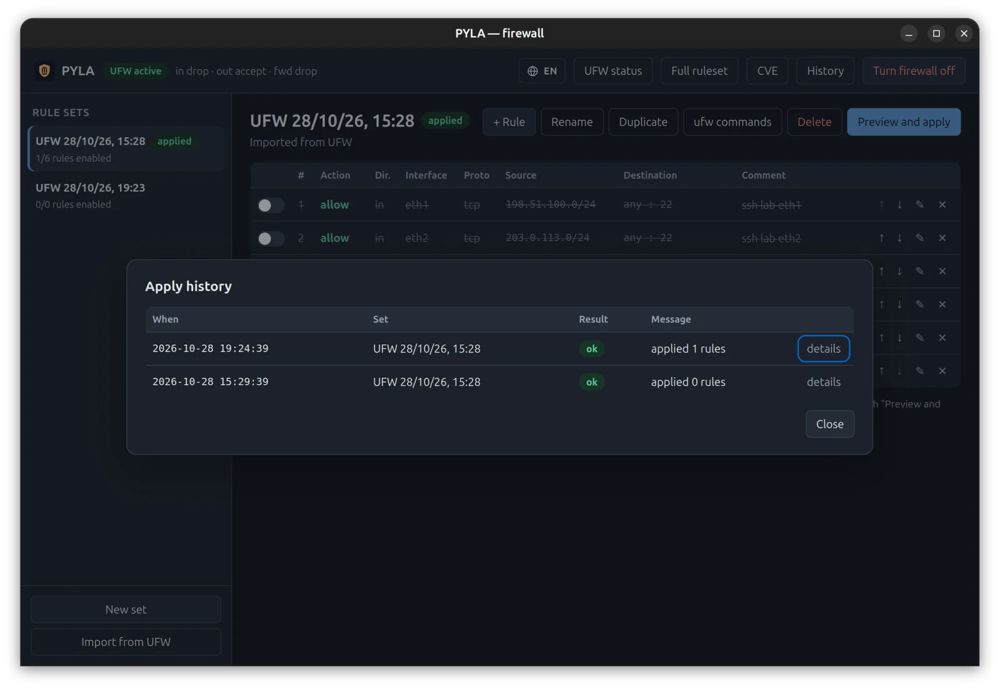

How PYLA fits your security architecture
Two views for architects and auditors: PYLA laid out on the SABSA 6×6 matrix, and the ISO/IEC 27001:2022 Annex A controls it helps you operate and evidence on Ubuntu hosts.
Support, not certification. PYLA is a host firewall tool. It does not make an organisation compliant with ISO/IEC 27001 and is not certified against it. The mapping below shows where PYLA can contribute to implementing a control and to collecting evidence; scope, risk treatment and the rest of the ISMS remain yours.
SABSA matrix
Six layers, from business context down to day-to-day operation, read through the six SABSA questions. Scope: one Ubuntu host protected by PYLA.
Scroll the table sideways →
| Layer | AssetsWhat | MotivationWhy | ProcessHow | PeopleWho | LocationWhere | TimeWhen |
|---|---|---|---|---|---|---|
| ContextualBusiness view | Ubuntu workstations and servers, and the services they expose to a network. | An exposed or unpatched host is an entry point. Posture must be known, not assumed. | Keep each host's network exposure deliberate, visible and under change control. | Machine owners and administrators; small teams and labs without enterprise agents. | Home, office, lab and cloud networks the host joins. | Continuously, at every change, and whenever a kernel CVE is published. |
| ConceptualArchitect's view | Host posture: firewall rules, listening services, kernel vulnerability state. | Least exposure, least privilege, reversibility of every change. | Declarative rule sets; verify before and after apply; mitigate until patched. | The user observes; an administrator authorises each privileged action. | The host perimeter, per interface and per address family (IPv4 / IPv6). | Before a change (preview), during (atomic apply), after (verify or roll back). |
| LogicalDesigner's view | Models for rule sets, the nftables ruleset, listeners and CVEs. | Default-deny inbound policy; only allow-listed helper verbs are executable. | Diff planner, exposure evaluator (simulated new connection), CVE verdict against the running kernel. | Two roles: unprivileged GUI, privileged helper. | Input / output / forward chains across UFW, Docker, libvirt and other tables. | Apply history, rule backups, CVE data refreshed every 6 hours. |
| PhysicalBuilder's view | Local SQLite database; UFW user rules; sysctl.d / modprobe.d files marked as tool-managed. |
polkit action space.pyla.app.helper requiring admin authentication. |
Rust core library, Tauri desktop app, pyla-helper speaking JSON in / JSON out. |
The system's polkit authentication agent. | /usr/local/libexec/pyla, /var/lib/pyla/backups, user data directory. |
Backup taken before every apply and restored automatically on mismatch. |
| ComponentTradesman's view | ufw, nftables, sysctl, modprobe, dpkg. |
Input validation and normalisation; no shell; cleared environment; absolute paths. | ufw CLI, nft list ruleset, /proc/net/tcp*, Ubuntu Security API. |
polkit and PAM. | Ubuntu 26.04, amd64 .deb package. |
Each release ships SHA-256 and SHA-512 checksums. |
| OperationalService manager's view | Active rule set, backups, mitigation state, watched CVEs. | Review exposure; track open CVEs; roll back on any deviation. | Preview & apply, mitigate & undo, update via the release package. | The administrator approves each privileged operation. | Per host today; a fleet console is on the roadmap. | Every apply is logged with time and outcome; CVE data shows its retrieval date. |
SABSA® is a registered trademark of The SABSA Institute. The matrix is used here as a descriptive lens; PYLA is not endorsed by The SABSA Institute.
ISO/IEC 27001:2022 — Annex A
Controls where PYLA contributes on Ubuntu hosts, what it does for each, and the evidence an auditor can see. Control numbers and titles follow ISO/IEC 27001:2022; the descriptions are ours.
Scroll the table sideways →
| Control | Title | Coverage | What PYLA does | Evidence |
|---|---|---|---|---|
| A.8.20 | Networks security | Supports | Manages the host firewall as named, ordered rule sets with a default policy, instead of ad-hoc commands. | Active rule set, the equivalent ufw commands, the full kernel ruleset. |
| A.8.22 | Segregation of networks | Partial | Rules per interface and source/destination; shows the chains Docker and libvirt add, so host-level segmentation is visible. | Rules scoped by interface; read-only view of every table and chain. |
| A.8.8 | Management of technical vulnerabilities | Supports | Lists open high/critical kernel CVEs for the running kernel, verdict per CVE, watch list, reversible subsystem mitigations until the fix is installed. | CVE list with status, fixed version and data date; mitigation state per subsystem. |
| A.8.9 | Configuration management | Supports | The intended firewall configuration is stored as a versionable rule set and compared with what is live. | Rule sets with "applied" status; diff between intended and live rules. |
| A.8.32 | Change management | Supports | Every change is previewed as a diff, applied atomically, verified, and rolled back automatically if the result differs. | Apply history with time and outcome; backups of previous rules. |
| A.8.2 | Privileged access rights | Partial | The GUI never runs as root; each privileged action goes through a dedicated polkit action and an allow-listed helper. | polkit policy file; system authentication log entries for the action. |
| A.8.16 | Monitoring activities | Partial | On-demand exposure check of every listening service against the live ruleset; per-rule packet counters. | Exposure verdicts per listener (IPv4 / IPv6); ruleset counters. Continuous monitoring is not provided. |
| A.8.15 | Logging | Partial | Logs PYLA's own changes; rules can enable UFW logging. A viewer for blocked traffic is on the roadmap. | Apply history; UFW log level shown in the status view. |
| A.8.1 | User endpoint devices | Partial | Brings firewall and kernel-hardening controls to Ubuntu laptops and workstations without an enterprise agent. | Per-device rule set, exposure and CVE state. |
| A.8.19 | Installation of software on operational systems | Partial | Distributed as a .deb with published checksums; source and build steps are public. |
SHA-256 / SHA-512 per release. Packages are not yet GPG-signed. |
ISO and IEC are trademarks of their respective owners. ISO/IEC 27001 text is not reproduced here; refer to the standard for the normative wording of each control.

